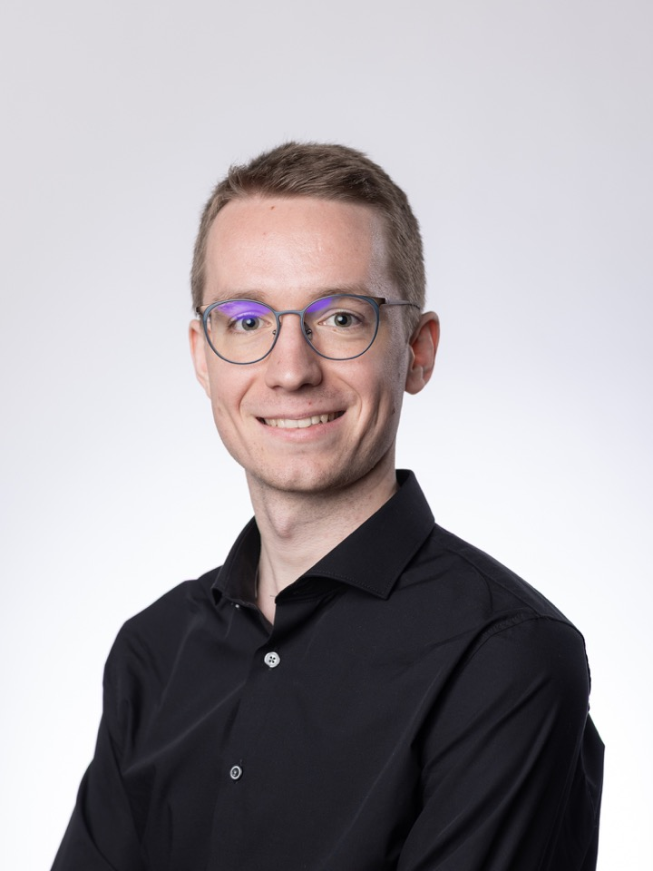

{kind=link}
Drift-Resilient TabPFN: In-Context Learning Temporal Distribution Shifts on Tabular Data
NeurIPS 2024 (Main Track); TRL @ NeurIPS 2024; AutoML Conference 2024 (Workshop Track)
I am currently pursuing a Master of Science in Computer Science at ETH Zurich, specializing in Machine Intelligence with a Minor in Data Management. My main research interests lie in tabular machine learning, time series forecasting, and addressing (temporal) distribution shifts. I also have a strong interest in Software Engineering and Finance.
Prior to joining ETH, I completed my Bachelor of Science in Computer Science at the University of Freiburg, where I graduated with a grade average of 1.1 (top 2%) and a focus on Machine Learning complemented by Algorithm Development and Analysis.
I have gained professional experience as a Software Engineering Intern at Citadel in the Central OTC team, where I contributed to core production systems in C++ and Python. I also completed a 7-month internship at Rheinmetall Air Defence AG, where I contributed to improving a real-time computer vision pipeline. This role enabled me to apply my deep learning and software engineering skills to optimize latency and accuracy while improving the system's robustness. I also led the integration of our pipeline within other systems, collaborating closely with multiple departments.
Additionally, I worked as a research assistant at the Machine Learning Lab of the University of Freiburg. There, I enhanced the TabPFN model by implementing techniques such as comprehensive missing value generation and model fine-tuning, resulting in improved benchmark performance.

NeurIPS 2024 (Main Track); TRL @ NeurIPS 2024; AutoML Conference 2024 (Workshop Track)